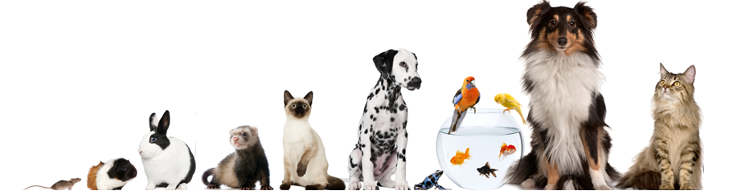

<div>
    <mat-toolbar color="primary">
        <span>(nombre veterinaria)</span>
        <div class="example-spacer"></div>
            <button mat-stroked-button color="warn"  routerLink="/login">Login</button>
            <button mat-stroked-button color="warn" routerLink="/formulario-registro">Registro</button>
    </mat-toolbar>
    
</div>
<router-outlet></router-outlet>